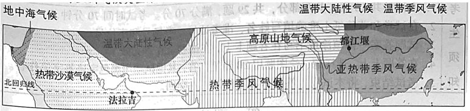

2023年北京中考地理 第16题 解析
16. 柑橘的传播可以（ ）
A. 增加原产地的年降水量B. 改变传入地的热量条件
C. 促进世界农业技术进步D. 消除地域发展水平差异
【答案】14. A 15. C 16. C
【解析】
【14题详解】
读图可知，我国柑橘的传播向西到欧洲地中海沿岸，A正确。向西到非洲，B错误。经大西洋、印度洋到大洋洲，C错误。经大西洋到南美洲，D错误。故选A。
【15题详解】
读图可知，柑橘种植区北半球多于南半球，东半球多于西半球，AB错误。柑橘种植区主要分布在北温带，C正确。集中在中纬度地区，D错误。故选C。
【16题详解】
柑橘的传播可以促进世界农业技术进步，C正确。不能增加原产地的年降水量、改变传入地的热量条件、消除地域发展水平差异，ABD错误。故选C。
【点睛】划分东、西半球的分界线是20°W和160°E两条经线组成的经线圈。20°W以东到160°E是东半球，20°W以西到160°E是西半球。南、北半球的分界线是赤道，赤道以北是北半球，赤道以南是南半球。纬度0°～30°为低纬度，30°～60°为中纬度，60°～90°为高纬度。
法拉吉和都江堰均是世界灌溉工程遗产。法拉吉将山泉水和地下水通过水渠引到山麓地带的村庄，用于生产生活。都江堰通过渠、堰调节岷江水，引水保障成都平原的农业生产。图为亚洲气候类型分布图（局部）。读图，完成下面小题。
